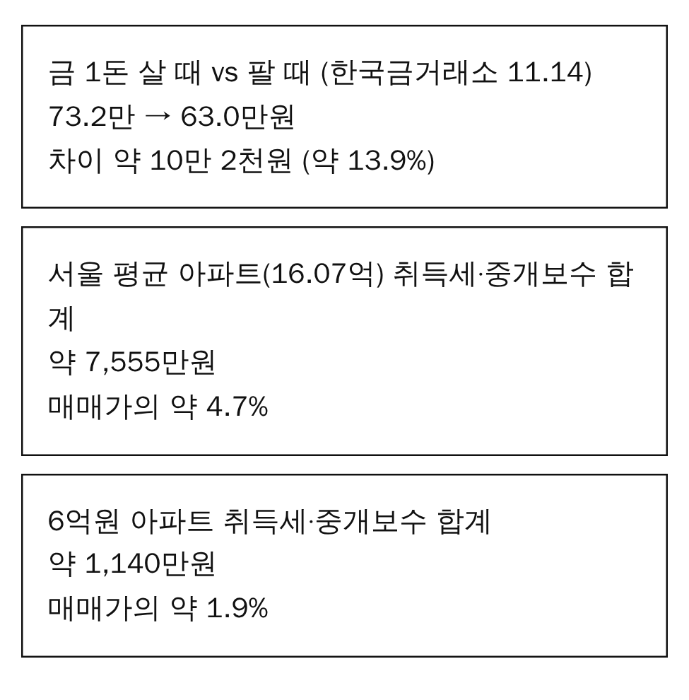
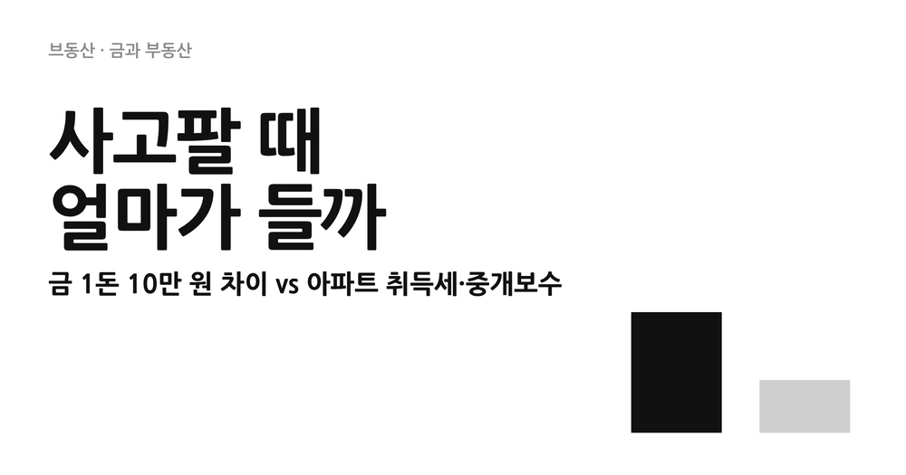
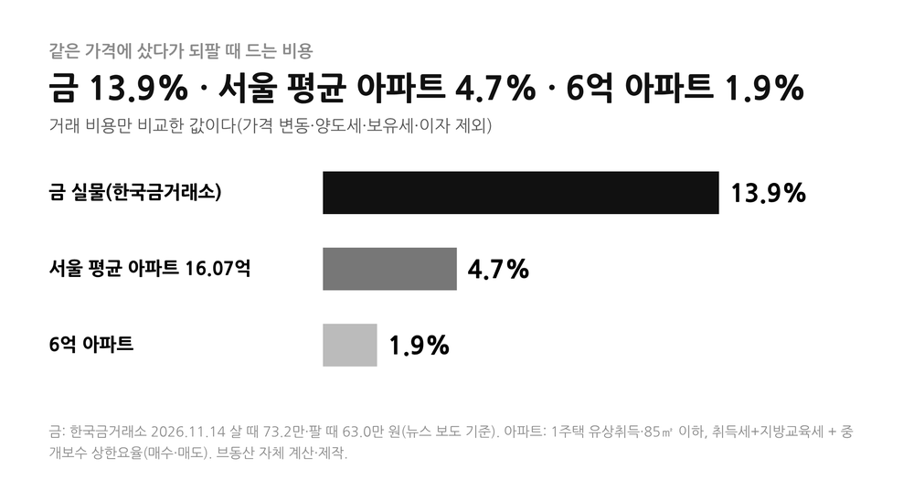
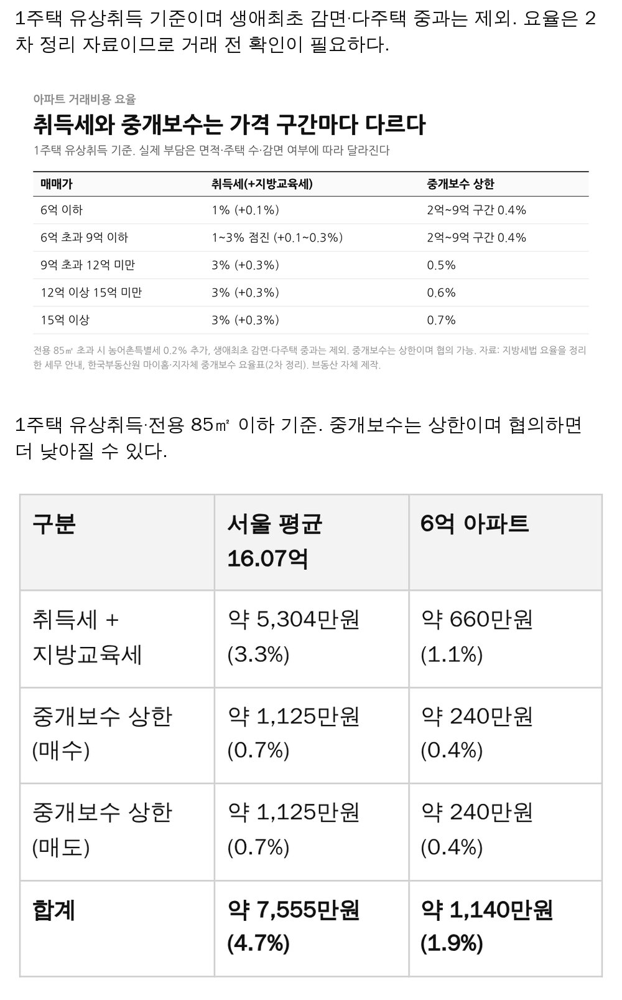
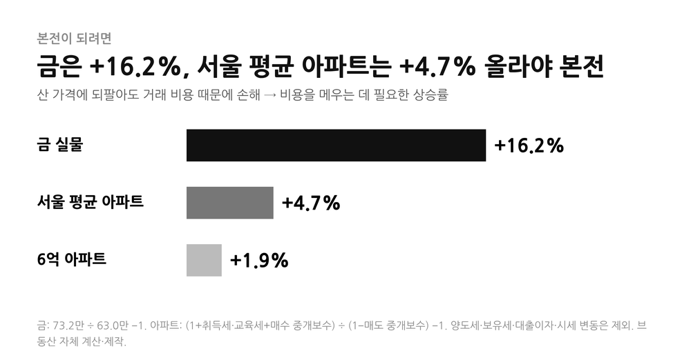
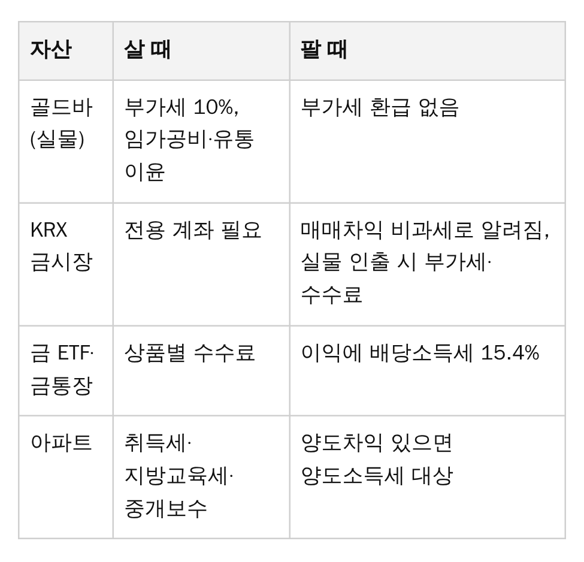
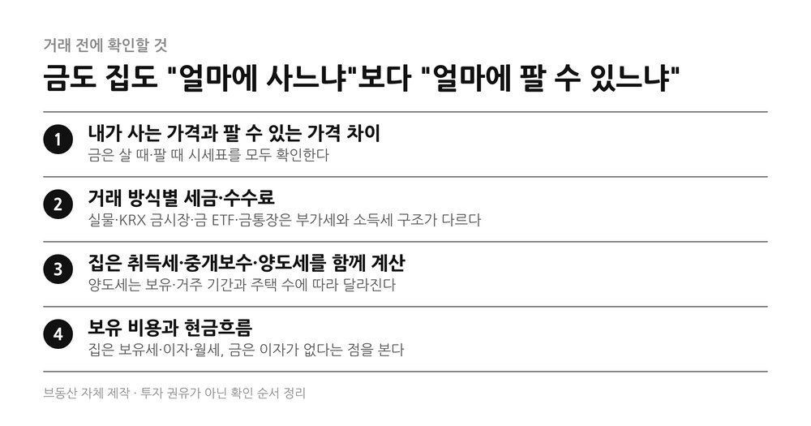

- 제목 복사 → 새 글 제목에 붙여넣기
- 태그 복사 → 태그 칸에 붙여넣기
- 본문 전체 복사 후 본문에 붙여넣기
- 이미지 전체 사진첩에 저장 (공유창에서 '이미지 저장')
- 에디터에서 【사진 번호】 줄을 찾아 그 자리에서 사진 버튼 → 같은 번호 파일 선택 (자리표시 줄은 지우기)
- 카테고리·대표이미지 확인 후 발행
③ 본문 전체 복사
붙여넣을 내용 미리보기
브동산 · 청약 언박싱 No.102 · 2026. 11. 14 (2026.11.14 시세 기준)
금 1돈 사고팔 때 10만 원 차이 | 부동산 취득세·양도세와 비교해 보면?
1. 결론부터 — 금은 사고팔 때 약 14%, 서울 평균 아파트는 약 4.7%
금값이 내려왔다는 뉴스가 나오면 "금을 살까, 집을 살까" 고민하시는 분들이 많아요. 그런데 어디가 오를지 맞히기 전에 먼저 봐야 할 게 있어요. 사고팔 때 드는 비용이에요. 오늘은 이 비용만 같은 눈금으로 놓고 비교해 봤어요.
【사진 01】 · 핵심 수치 박스
산 가격에 그대로 되팔았을 때 금은 약 13.9%, 서울 평균 아파트는 약 4.7%, 6억원 아파트는 약 1.9%가 비용으로 나가요. 본전이 되려면 금은 약 16.2%, 서울 평균 아파트는 약 4.7%가 올라야 해요.
【사진 02】 · 대표 조감도
브동산 자체 제작 표지.
무엇? 금 실물과 아파트를 사고팔 때 드는 비용을 비교한 글이에요.
언제? 금 시세는 2026년 11월 13~14일 보도 기준이에요. 서울 아파트 평균은 KB 8월 기준 16억 739만원이에요.
주의 가격 전망이나 투자 권유가 아니에요. 양도세·보유세·대출이자는 계산에 넣지 않았어요.
2. 금은 왜 살 때와 팔 때 가격이 다를까요
한국금거래소 11월 14일 기준 순금 24K 1돈은 살 때 73만 2천원, 팔 때 63만원이에요. 한국거래소(KRX) 금시장에서 11월 13일 거래된 62만 7,825원은 팔 때 시세에 가까워요. 국제 금값은 같은 시기 온스당 3,880달러대였어요.
차이가 나는 가장 큰 이유는 부가가치세예요. 실물 금을 살 때 붙는 10% 부가세는 개인이 팔 때 돌려받지 못해요. 거기에 골드바를 만드는 임가공비와 운송비, 유통 이윤이 살 때 가격에 들어가요. 업계에서는 살 때 가격에 팔 때보다 평균 15% 정도 비용이 더 붙는다고 설명해요. 금값이 크게 움직일 때는 이 차이가 더 벌어진다는 설명도 있어요.
그래서 오늘 금을 사서 같은 시세에 바로 팔아도 1돈에 약 10만 2천원이 줄어들어요. 본전이 되려면 시세가 약 16.2% 올라야 해요(73.2만 ÷ 63.0만 − 1).
【사진 03】 · 금 실물과 아파트의 왕복…
금은 한국금거래소 2026.11.14 시세(뉴스 보도), 아파트는 1주택 유상취득·85㎡ 이하 기준 취득세·지방교육세와 중개보수 상한(매수·매도).
3. 아파트는 사고팔 때 얼마가 들까요
아파트를 사면 취득세와 지방교육세, 중개보수가 들어요. 1주택자 기준으로 취득세는 6억원 이하 1%, 6억 초과 9억 이하 1~3%, 9억 초과 3%예요. 지방교육세가 따로 붙고 전용 85㎡를 넘으면 농어촌특별세 0.2%도 더해져요. 중개보수는 상한이 있고 협의로 정해요. 2억~9억원 0.4%, 9억~12억 0.5%, 12억~15억 0.6%, 15억 이상 0.7%가 상한이에요.
【사진 04】 · 취득세와 중개보… 외 1장
4. 브동산 한줄평
비용 비율만 보면 금 실물이 아파트보다 훨씬 높아요. 다만 아파트는 금액이 크고 양도세·보유세·대출이자가 따로 있어서 어느 쪽이 낫다고는 말할 수 없어요.
중요한 건 오르는 폭보다 내가 부담하는 비용을 먼저 아는 거예요. 금은 본전이 되려면 약 16.2%, 서울 평균 아파트는 약 4.7%가 올라야 비용을 메워요.
【사진 05】 · 거래 비용을 메우는 데 …
양도세·보유세·대출이자·시세 변동은 제외.
5. 세금 구조는 이렇게 달라요
금은 어떻게 사느냐에 따라 세금이 달라요. 골드바는 살 때 부가세 10%가 붙고 팔 때 돌려받지 못해요. KRX 금시장은 장내 매매차익이 비과세로 알려져 있지만 실물로 인출하면 부가세와 수수료가 들어요. 금 ETF와 금통장은 이익에 배당소득세 15.4%가 붙는 구조로 설명돼요.
【사진 06】 · 표
금 투자 세금은 언론·블로그의 일반적 설명을 정리한 것이다. 거래 전 국세청, 한국거래소, 증권사 안내를 확인해야 한다.
아파트는 팔 때 양도차익이 있으면 양도소득세 대상이에요. 1세대 1주택 비과세 같은 요건은 보유 기간, 거주 기간, 주택 수, 집값 기준에 따라 사람마다 달라서 이 글의 4.7%에는 넣지 않았어요.
【사진 07】 · 금과 집을 사고팔기 전에…
확인 순서 정리이며 투자 판단을 대신하지 않는다.
6. 결론
금 1돈은 사고팔 때 약 10만원(약 14%) 차이가 나고, 서울 평균 아파트는 취득세와 중개보수만 약 4.7%가 들어요. 어디가 오를지 맞히기 전에 내가 낼 비용부터 확인해 보세요.
더 자세한 정리는 브동산 홈페이지에서 확인하실 수 있어요.
참고 자료
더페어 · 오늘(13일) 금시세 하락, 순금 1돈 73만7000원
톱스타뉴스 · 금 한돈 62만7825원, 5거래일째 하락(KRX, 11.13)
글로벌이코노믹 · 국제금값 3950달러 밑으로(11.12)
한국경제 · 금 살 때와 팔 때 1돈당 차이(2026.1.21)
금 매매 세금 총정리(골드바·KRX 금현물·금통장·금 ETF) 안내
헤럴드경제 · 서울 아파트 평균 매매가 첫 16억 돌파(2026.8.23, KB 기준)
본 글은 공개된 언론 보도와 안내 자료를 바탕으로 한 정보 제공 목적이며 투자 권유가 아닙니다. 시세와 세율은 시점에 따라 달라질 수 있으니 거래 전에 직접 확인하세요.
④ 사진 자리표시 ↔ 파일














- 카테고리: 부동산이야기
- 제목 · 태그 입력 확인
- 대표 이미지(썸네일): cover.png, cost.png
- 【사진】 자리표시 줄이 모두 지워지고 사진으로 바뀌었는지 훑어보기
- 발행 버튼